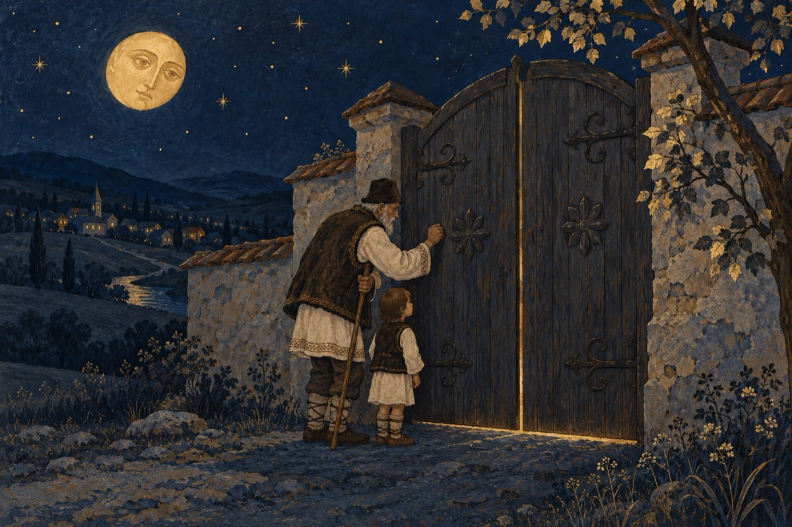

A cui
A cui mai este țara asta?
În care totuși m-am născut.
Sunt legitim, port numele lui mama și a lui tata!
Și unde mai pui că-aici am crescut!
Da, aici m-am format ca om și am muncit
Și am pățit de toate să se știe!
Am fost și-ndrăgostit, aici am și îmbătrânit,
Am și copii, nepoți și strănepoții, o mare familie!
Nu vi se pare că țara-i la mezat
Niște compatrioți au dat-o la fier vechi
Și toți străinii și nestrăinii ce-au fost au tot furat.
Iar noi poporul facem doar priveghi!
Puterile s-au adunat în Parlament
Și stăpânesc totul, cum o caracatiță
Cu legi nedrepte, votate în secret!
Au părăsit poporul care i-a ales și acum e-n suferință.
Umblăm și batem aiurea pe la porți
Orbecăind după dreptate și adevăr ce nu mai sunt
Suntem amenințați și-ndepărtați de niște hoți
Care fac tot ce e rău, acoperiți de-a lor cuvânt!
A cui mai este țara asta?
Ce voi lăsa copiilor, nepoților ca moștenire?
Prevăd că asta ne e soarta
Să luăm drumurile Europei în pribegie!
Vasile Groza